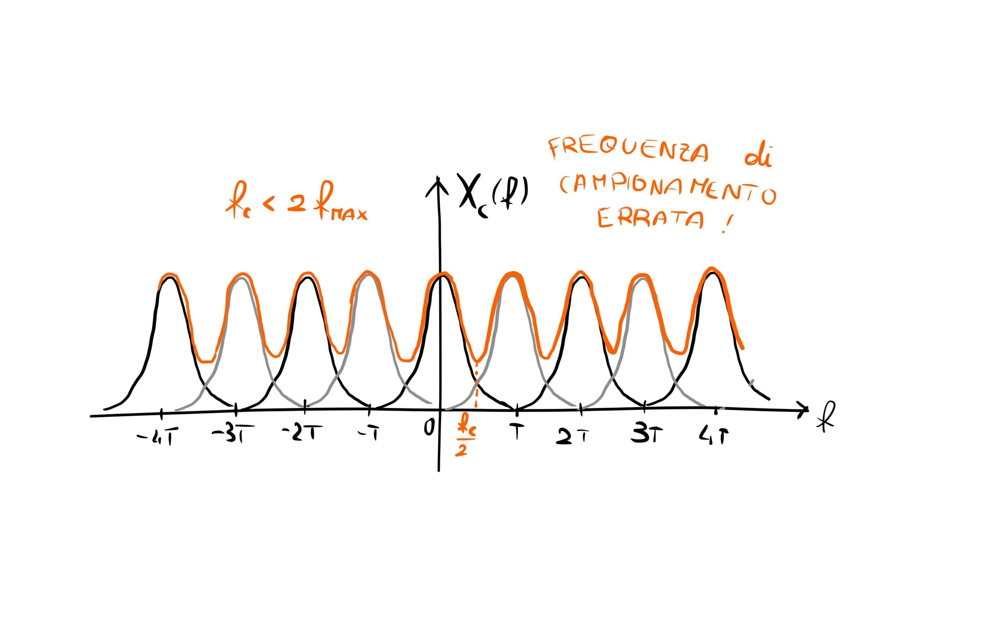

Laboratory story · Digital electronicsStoria di laboratorio · Elettronica digitale
Quantization and samplingQuantizzazione e campionamento
What is lost when a continuous signal becomes a sequence of numbers?
Che cosa si perde quando un segnale continuo diventa una sequenza di numeri?

This digital electronics experiment explores the limits that appear when an analog signal is transformed into its digital counterpart.
The conversion is performed by an ADC (analog-to-digital converter), an electronic component that turns a time-varying analog quantity, such as current or voltage, into numbers.
Digital instruments are generally simpler, less expensive and more versatile than analog ones. When used correctly they can limit signal degradation, but two effects must be kept under control.
Quantization
Moving from a continuous to a discrete representation requires the signal to be quantized. The infinitely many values of a continuous function cannot all be represented digitally. The resulting information loss and additional noise are bounded by half of the LSB (least significant bit).
The approximation becomes more severe as the ADC bit depth decreases. The practical solution is to balance a high number of bits against conversion speed: the more bits are used, the slower the conversion tends to be.
Sampling
During analog-to-digital conversion, a continuous signal cannot be measured at every instant. A time interval must be chosen, producing a discrete sequence of samples. Although it seems natural to sample as rapidly as possible, the minimum useful rate is governed by the Nyquist-Shannon sampling theorem.
Using a waveform generator and a digital oscilloscope, we observed the effects produced by quantization and sampling as a signal moves from the analog to the digital domain.
Attraverso questo esperimento di elettronica digitale si sono voluti sondare i limiti che emergono nella trasformazione di un segnale analogico nella sua controparte digitale.
La conversione si effettua attraverso un ADC (Analog to Digital Converter), un componente elettronico che converte un segnale analogico, per esempio una corrente o una tensione variabili nel tempo, in numeri.
Gli strumenti digitali risultano in genere più semplici, economici e versatili rispetto a quelli analogici. Se impiegati correttamente consentono di limitare la degradazione del segnale, ma presentano due effetti da tenere sotto controllo.
Quantizzazione
Nel passaggio dal continuo al discreto il segnale viene quantizzato. Non tutti gli infiniti valori assunti da una funzione continua possono essere rappresentati digitalmente. La perdita di informazione e il rumore aggiuntivo generati dal processo sono limitati a metà del LSB (Least Significant Bit).
L’approssimazione è tanto più drastica quanto minore è il numero di bit dell’ADC. Occorre quindi trovare il giusto compromesso tra un numero elevato di bit e la velocità della conversione: maggiore è il numero di bit, più lenta tende a essere la conversione.
Campionamento
Nella conversione da analogico a digitale non è possibile prelevare il segnale continuo in qualunque istante. Si deve fissare un intervallo di tempo entro cui misurarlo, ottenendo così una sequenza discreta di campioni. Benché sembri naturale campionare il più velocemente possibile, la frequenza minima utile è regolata dal teorema di Nyquist-Shannon.
Attraverso un generatore di forme d’onda e un oscilloscopio digitale si sono osservati gli effetti che quantizzazione e campionamento producono nel passaggio di un segnale dal dominio analogico a quello digitale.
Read the full reportLeggi la relazione completaSix pages with the experimental setup, measurements and conclusions.Sei pagine con apparato sperimentale, misure e conclusioni.
Open PDFApri il PDF